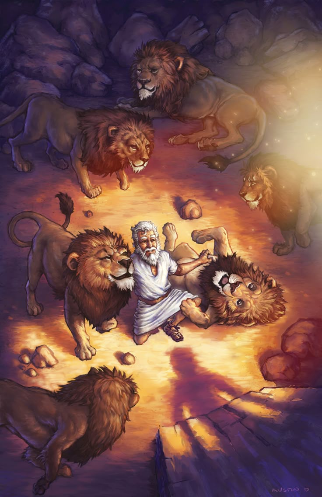
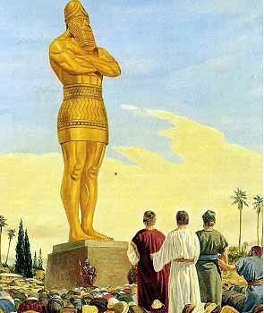
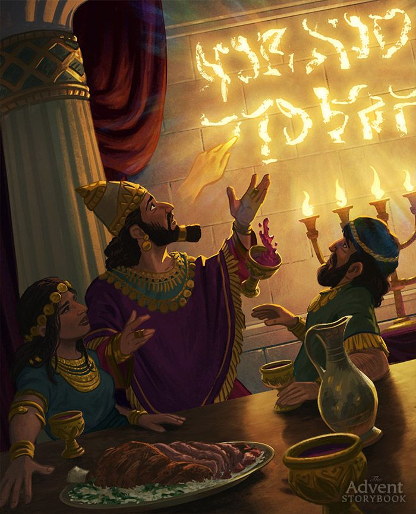

Daniel
Surrender & Integrity
One Purpose.
One Stand.
One God.
Uncompromising faith in a shifting culture.

Why Daniel Matters Today
Daniel lived as a minority in a foreign empire. Today, Gen Z faces massive pressure to fit in. Let's see how standing for God changes everything.
New Beginnings
Moving to a new city, state, or country for college or work. Feeling detached from family and roots.
Peer Pressure
When coworkers or team members say smoking, casual drinking, or casual relationships are normal, and "no one is watching us."
No Compromise
The world tells you casual compromise is harmless. But we must follow God every time, without cutting corners.
Overcome Isolation
Don't worry if people isolate or exclude you because you choose to live differently. When we stand for God, He does wonders!
Refusing the King's Table
Daniel refused to eat the food and drink the wine offered by the Babylonian king, which violated God's commands. Instead of fitting in, he chose vegetables and water. God rewarded his devotion, making him and his friends healthier and ten times wiser than the king's advisors. Your youth and teen stage is the primary investment you make in God for your future.
Rely on God, Not Marks or Jobs
Don't stress over your grades or job hunt today. Fully rely on God—He can do wonders for you!

Integrity Outlasts Empires
A lifetime of faithfulness starts in youth.
What Daniel Teaches Us
Four accounts of unwavering integrity and God's miraculous defense.
Refusing the Diet (Daniel 1:8)
Daniel resolved not to defile himself with Babylonian royal luxuries, honoring God's dietary laws.
Wisdom & Dreams (Daniel 2:19)
God revealed Nebuchadnezzar's hidden dream to Daniel, validating him above all Babylonian magicians.
The Blazing Furnace (Daniel 3:25)
Daniel's companions refused to bow to the king's golden idol and were walking untouched in the fire.
The Lions' Den (Daniel 6:22)
Daniel prayed daily despite the royal ban. God shut the mouths of the lions to protect his obedience.
Remember Who You Serve
Our God is the God who walks through the fire with you and stops the lions. When peers at school, college, or colleagues in the office tell you to compromise because "everyone does it," remember who you serve. Don't worry about being isolated. Stand for Him, and He will do wonders for your grades, your job, and your life.

Daniel's Challenge
What if putting God first means standing alone or being isolated?
Will you surrender and fully rely on Him?
Daniel's Journey
Follow the life of Daniel, who served God with pure integrity in the middle of Babylon.
DANIEL 1-6 PROGRESSION
The decision not to compromise.
Daniel decided not to defile himself with the king's royal food, staying true to God's commands.
The ten-day test.
Choosing vegetables and water, Daniel and his companions looked healthier than everyone else.
Understanding Nebuchadnezzar's dream.
When magicians failed, God revealed the king's dream to Daniel in a night vision.
Refusing to bow down.
Daniel's friends stood tall and refused to bow down to the king's massive gold statue.
The fourth figure in the fire.
The friends were thrown in the blazing furnace, but God walked with them and saved them completely.
Prayer at the open window.
Daniel continued praying to God three times a day, even after a royal decree made it illegal.
Saved from the lions.
Thrown in the den of hungry lions, God sent His angel to shut the lions' mouths and save him.
The vision of the everlasting kingdom.
Daniel received visions of God's eternal throne and rule, standing as a witness for future generations.
"But Daniel resolved not to defile himself with the royal food and wine... and God gave these young men knowledge and understanding."— Daniel 1:8, 17